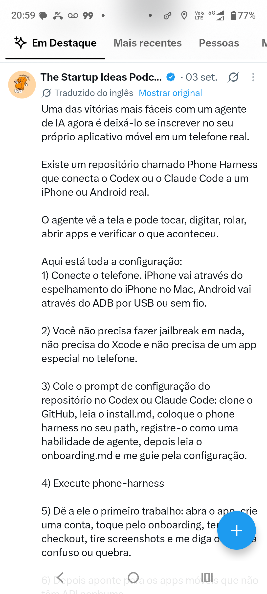
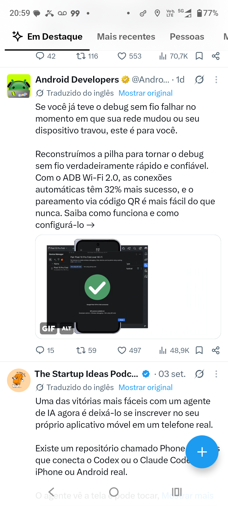
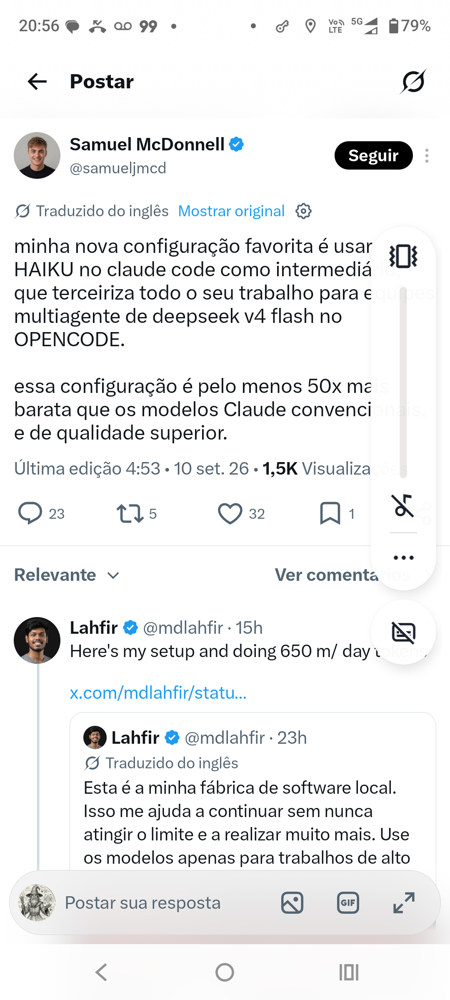

Phone Harness: faça seu agente testar seu checkout como usuário real
#twitter#github#gringa
“Passo 4-6: abra o app, crie conta, tente checkout e diga onde quebra. Toda equipe móvel deveria rodar esse teste.”
● @startupideaspod • twitter • 2026-09-10 20:59:37 • PRINT REAL
● SIGA: Deixe a IA se inscrever no seu próprio app em um telefone real — Phone Harness conecta Codex/Claude Code ao iPhone/Android real. Vê tela, toca, digita, rol →
IAdidatico
Deixe a IA se inscrever no seu próprio app em um telefone real
@startupideaspod• 20:59:32 • #twitter, #github, #gringa

VPStecnico
ADB Wi-Fi 2.0: 32% mais sucesso e QR pairing que realmente funciona
@AndroidDev• 20:59:15 • #twitter, #github, #gringa

Hackingtecnico
android-remote-control-mcp: controle Android via MCP com ADB e dump XML
@LawrenceW• 20:58:56 • #twitter, #github, #gringa
IAprovocador
Meu setup 50x mais barato: HAIKU terceiriza tudo pro DeepSeek v4 Flash no OpenCode
@samueljmed• 20:56:19 • #twitter, #llm, #gringa

IA • didatico
@emillyh • 20:55:14
IA • provocador
@WillDobrev • 20:55:02
Automacao • provocador
@vovabesh • 20:54:40

IA • didatico
@mattyp • 20:54:22
IAtecnico
Dando um Telefone ao Grok Bot: template x.ai + Bland API + voz clonada assustadora
@mattyp• 20:54:17 • #twitter, #gringa, #ia

IAdidatico
Deixe a IA se inscrever no seu próprio app em um telefone real
@startupideaspod• 20:59:32 • #twitter, #github, #gringa
● AO VIVO • PRINTS REAIS
Prints originais exibidos como imagem da matéria — igual foto do jogo no Globo. Toque pra ampliar. Tudo OCR tesseract moto g84
822 prints totais
10 NOVAS HOJE
globo.com • visual idêntico • G1 DE IDEIAS
Cores #0669DE #06AA48 #C4170C • Fonte Open Sans 800 • Print como foto da notícia
Desenvolvido por: Fábio Rosestolato • 11 set 2026 • /prints/*.png
Cores #0669DE #06AA48 #C4170C • Fonte Open Sans 800 • Print como foto da notícia
Desenvolvido por: Fábio Rosestolato • 11 set 2026 • /prints/*.png